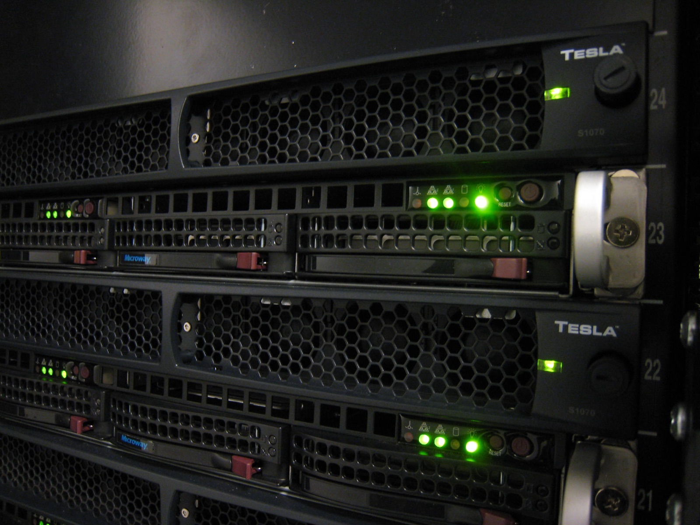

Executive Summary
"프론티어 LLM 대신 100배 작은 커스텀 SLM으로 요청당 비용을 80% 낮춘다." 2026년 소형언어모델(SLM) 배포 시장이 공유하는 세일즈 포인트다. Distil Labs의 3단계 파이프라인이 이 시장이 작동하는 원리를 압축해 보여준다. 운영 트래픽 1%를 라우팅해 트레이스를 모으고, 그 트레이스로 합성 데이터를 만들어 소형 모델을 학습·양자화한 뒤, 전체 트래픽을 전환하는 방식이다. 이 보고서가 붙잡는 질문은 "얼마나 싸지는가"가 아니라 "그 절감을 무엇이 보증하는가"다.
결론부터 말하면, 절감의 크기는 모델 압축이 아니라 그 모델을 학습시킨 데이터 큐레이션 파이프라인의 품질이 결정한다. 이 명제는 벤더 자신의 숫자에서 먼저 드러난다. 대표 사례로 내세우는 Knowunity의 비용 절감률이 같은 회사 채널 안에서 홈페이지 68%와 케이스스터디 50%로 엇갈리기 때문이다. 벤더가 자기 발표 수치조차 통일하지 못한다는 사실은, 비용 절감의 신뢰성이 결국 측정·검증 체계, 곧 데이터 품질 거버넌스에 달려 있다는 것을 거꾸로 보여준다.
이 글은 80% 절감의 원가 구조를 세 요인으로 분해하고, 자동화된 파이프라인 안에 숨은 두 개의 품질 함정(1% 샘플의 대표성 붕괴, 교사 편향의 상속)을 학술 근거와 함께 짚은 다음, 실무자가 "언제 LLM을 버리고 SLM으로 갈 것인가"를 판단할 4축 체크리스트로 마무리한다. 벤더 홍보가 아니라 비판적 데이터 품질 렌즈의 분석이다.
10~30배
SLM 서빙 저비용
NVIDIA Research 학술 앵커 — 벤더 80%보다 방법론 공개된 수치
50% vs 68%
벤더 자기 발표 불일치
Knowunity 절감률이 같은 회사 채널 안에서 엇갈림
≥5%
model collapse 방지 임계
완전 자동화도 실 데이터 검증 없이는 품질 보장 불가
3배
2027년 특화 소형모델
범용 LLM 대비 사용량 전망(Gartner 공식)
80% 절감의 해부 — 그 비용은 어디서 오는가
"80% 절감"은 하나의 마법이 아니라 세 개의 서로 다른 원가 절감이 합쳐진 결과다. 그리고 세 요인은 성격이 전혀 다르다. 앞의 두 요인은 순수하게 이득이지만, 세 번째 요인은 변동비를 고정비로 바꾸는 거래여서, 조건이 맞지 않으면 오히려 손해가 될 수 있다. 이 구조를 분해하지 않으면 "80%"라는 숫자가 어느 워크로드에서 성립하고 어디서 무너지는지 판단할 수 없다.
첫째는 파라미터 축소다. 프론티어 모델 대비 약 100배(벤더 표현에 따라 400배로도 소개된다) 작은 모델은 추론 한 번에 훨씬 적은 연산을 쓴다. 이것이 요청당 단가를 낮추는 1차 요인이다. 둘째는 양자화다. 가중치를 INT8·INT4 같은 저정밀도로 압축하면 GPU 메모리 사용량이 줄고 처리량이 올라간다. 셋째는 자가호스팅이다. 외부 API를 쓰지 않고 자체 인프라에서 모델을 돌리면 API 제공자의 마진이 사라진다.
문제는 셋째 요인이다. 자가호스팅은 API 마진(변동비)을 없애는 대신 GPU 유휴비용과 엔지니어링 인건비라는 새 고정비를 만든다. 자가호스팅 운영에는 최소 1.5~2 FTE(연 27만~55만 달러 규모), 엔터프라이즈 수준에서는 4~6 FTE(연 72만~150만 달러 규모)가 든다는 취합 추정이 있다. 트래픽이 이 고정비를 상쇄할 만큼 크지 않으면, 요청당 단가는 싸도 총소유비용(TCO)은 API를 유지하는 편이 낫다.

여기에 결정적 공백이 하나 있다. "요청당 80% 절감"이 순수 토큰 단가 기준인지, 데이터 큐레이션·재학습·모니터링·인건비까지 포함한 TCO 기준인지 벤더는 밝히지 않았고 공개 자료로는 확인할 수 없다. 그리고 이 절감 주장의 신뢰도를 가늠할 유일한 독립 앵커는 학술 문헌이다. NVIDIA Research는 특화 SLM이 프론티어 대비 "10~30배 저렴하게 서빙 가능"하다고 보고한다(arXiv:2506.02153). 방향은 벤더 주장과 일치하지만, 방법론이 공개된 쪽은 학술 문헌뿐이라는 점을 기억해야 한다.
파라미터 축소와 양자화는 모델 쪽 이득이고, 자가호스팅은 운영 구조의 거래다. "80%"는 이 세 가지가 특정 트래픽 조건에서 맞아떨어졌을 때의 숫자이지, 어떤 워크로드에서도 재현되는 상수가 아니다.
3단계 파이프라인의 실체 — 모델이 아니라 데이터 문제다
Distil Labs가 소개하는 워크플로는 "10분의 사람 노력과 4개의 명령어"라는 자동화의 매끄러움으로 요약된다. 겉으로 보면 세 단계다. 운영 트래픽의 1%를 자사 엔드포인트로 라우팅해 트레이스를 수집하고, 그 데이터로 SLM을 빌드·배포한 뒤, 전체 트래픽을 전환한다. 그러나 이 세 단계를 열어 보면 안에서 일어나는 일은 대부분 모델링이 아니라 데이터 큐레이션이다.
중간 단계를 벤더 표현이 아니라 데이터 공정으로 다시 라벨링하면 이렇게 된다. 트레이스 수집은 학습 데이터 확보, 합성 데이터 생성은 데이터 증강, 필터링은 품질 게이트, 분포 매칭은 대표성 보정, 사후학습(SFT+RL)은 지도·선호 신호 주입, 양자화는 경량화 압축이다. 모델 아키텍처를 고르거나 새로 설계하는 단계는 사실상 없다. 파이프라인의 심장은 모델이 아니라, 어떤 데이터를 어떤 품질 기준으로 걸러 넣느냐다.
이 재라벨링이 중요한 이유는 책임 소재가 바뀌기 때문이다. 자동화가 잘 되어 있으면 사람이 개입할 곳이 없어 보이지만, 자동화의 매끄러움이 데이터 품질 판단을 대체하지는 못한다. 어떤 1% 샘플을 뽑을지, 합성 데이터에서 무엇을 걸러 낼지, 분포를 무엇에 맞출지는 여전히 판단의 문제이고, 이 판단이 최종 모델 품질을 결정한다. "좋은 SLM은 좋은 큐레이션의 함수"라는 명제가 벤더 마케팅 뒤에 숨어 있다.
두 개의 품질 함정 — 1% 대표성과 합성 데이터 상속
앞 절에서 파이프라인의 심장이 데이터 큐레이션임을 확인했다면, 이제 그 심장에 숨은 두 개의 함정을 봐야 한다. 둘 다 "정확도를 유지한다"는 주장의 일반화를 가로막는 지점이고, 둘 다 자동화가 매끄럽게 감추기 쉬운 종류의 실패다.
3.1함정 ① — 1% 샘플의 대표성 붕괴
파이프라인은 운영 트래픽의 1%로 학습 데이터를 만든다. 이 1%가 전체 분포를 대표한다는 보장은 어디에도 없다. 자주 오는 흔한 요청은 1% 안에도 충분히 담기지만, 드물게 오는 롱테일 엣지케이스나 시간이 지나며 서서히 바뀌는 분포 드리프트는 작은 샘플에서 통째로 빠지기 쉽다. 대표성이 깨지는 지점에서 SLM은 요란하게 죽지 않고 조용히 틀린다. 희귀 패턴과 신규 분포에서만 성능이 무너지므로, 평균 정확도 지표로는 잘 보이지 않는다. 자동화 파이프라인은 이 실패를 "매끄럽게" 감춘다.
3.2함정 ② — 교사 편향 상속 (≠ model collapse)
두 번째 함정은 자주 혼동되는 두 개념을 구분해야 정확히 보인다. 방어 전략이 달라지기 때문이다.
Model collapse는 모델이 자기 자신의 출력을 재귀적으로 재학습할 때 일어난다. 세대를 거듭할수록 분포의 꼬리(희귀 모드)가 먼저 사라지고, 5~10세대면 다양성이 붕괴한다. 관건은 실 데이터의 비율이다. 실 데이터를 일정 비율(대략 5% 이상) 유지하면 분포 이탈이 유계에 머물지만, 완전 합성으로 가면 발산한다. 최근 연구는 매 세대 데이터를 "대체"한다는 가정보다 "누적"한다는 가정에서 붕괴가 덜 심각하다고 본다.
교사 편향 상속(teacher-bias inheritance)은 이것과 메커니즘이 다르다. Distil Labs의 파이프라인은 순수 재귀가 아니라 교사 LLM의 트레이스를 기반으로 학생 SLM을 학습시킨다. 따라서 model collapse와 동일하진 않다. 그러나 교사 LLM이 가진 편향·환각·블라인드스팟이 합성 데이터를 거쳐 학생 SLM으로 그대로 전이되는 별개의 인접 리스크가 남는다. 자기 출력의 재귀가 아니라 남의 결함의 상속이라는 점에서, 방어법도 갈린다. 전자는 실 데이터 혼합으로, 후자는 교사 출력의 독립 검증으로 막는다.
3.3덧붙는 취약성 — 양자화는 작은 모델일수록 아프다
앞 절에서 양자화를 "조건부 이득"이라 부른 이유가 여기 있다. 정밀도를 낮추면 언제나 약간의 정확도를 내주는데, 그 손실 폭은 모델 크기와 태스크에 크게 의존한다. 70B급 대형 모델은 INT4에서도 비교적 안정적이지만, 소형 모델은 GPTQ 같은 기법에서 유의미한 손실을 겪는 경향이 보고된다. 특히 추론(reasoning) 태스크는 INT4에서 INT3로 한 단계 더 내려가면 성능이 급락하기도 한다. GPTQ와 AWQ 중 무엇이 나은지는 연구마다 결론이 엇갈려(모델·태스크 의존적), 일반화해서 단정할 수 없다. 요컨대 "100배 작은 모델"이라는 장점과 "작을수록 양자화에 취약"이라는 단점은 같은 축의 양면이다.
"동일 정확도 유지"는 좁은 task·대표성 있는 데이터·감당 가능한 양자화라는 세 조건이 모두 맞을 때의 주장이다. 세 조건 중 어느 하나라도 흔들리면, 평균 지표는 그대로여도 롱테일에서 조용히 무너진다. 그리고 세 조건은 모두 모델이 아니라 데이터·검증 쪽 문제다.
SLM 배포 시장 지형 — Distil Labs는 어디에 서 있나
한 벤더의 파이프라인을 분석한다고 해서 그 벤더가 시장의 전부인 것은 아니다. Distil Labs를 제대로 자리매김하려면 두 가지를 봐야 한다. "IBM·AWS·NVIDIA가 지원한다"는 문구의 실제 무게, 그리고 경쟁 지형에서 이 회사가 선 위치다.
4.1"Backed by" 로고의 실제 무게
홈페이지에 나열된 IBM·AWS·NVIDIA 로고는 대등한 사업 제휴로 읽히기 쉽지만, 실제 성격은 대체로 스타트업 지원 프로그램 수준일 가능성이 높다. NVIDIA Inception, AWS Activate 같은 크레딧성 프로그램은 지분이나 수수료 관계 없이 신생 기업에 폭넓게 제공되며, 대등 제휴를 뒷받침하는 별도 공식 발표는 확인되지 않는다. 예외는 IBM이다. Rocketgraph 사례에서 IBM의 Granite 모델을 사용하고 IBM Power에 배포한 정황, 그리고 IBM 자체 채널이 이 사례를 홍보한 정황이 있어 기술 파트너십의 실체는 확인된다. 다만 관련 성능 수치는 여전히 공동 발표일 뿐 제3자 검증은 아니다.

4.2경쟁 지형 — 초기 단계의 신생 플레이어
자금 규모와 성숙도로 보면 Distil Labs는 SLM/파인튜닝 배포 시장의 초기 단계 플레이어다. 아래 표는 공개된 펀딩·밸류에이션 정보를 취합한 것으로, 수치는 시점·출처에 따라 편차가 있어 규모의 상대적 감을 잡는 용도다.
| 플레이어 | 규모(취합·추정) | 포지션 |
|---|---|---|
| Distil Labs | Series A 770만 달러 · 팀 ~12명 | 데이터 파이프라인 자동화 특화, 초기 단계 |
| Arcee AI | 약 4,900만 달러 | 방법론이 가장 유사한 직접 경쟁 |
| Together AI | 밸류 약 83억 달러 · ARR 10억 달러+ | 서빙·인프라 대형 플레이어 |
| Fireworks AI | 밸류 약 175억 달러 | 고속 추론 서빙 특화 |
| 오픈소스 스택 | Unsloth · LLaMA-Factory (수만 stars) | 무료로 유사 소형화 워크플로 구현 |
이 비교가 벤더를 폄하하려는 것은 아니다. 다만 가치 제안의 상대적 크기를 정직하게 가늠하게 해 준다. Unsloth·LLaMA-Factory 같은 무료 오픈소스 스택이 이미 트레이스 기반 소형화 워크플로를 구현하고 있으므로, Distil Labs가 파는 것은 새로운 능력이 아니라 "10분·4개 명령어"라는 자동화 편의다. 그 편의에 값을 매길지는 각 조직이 데이터 품질 판단을 얼마나 자력으로 감당할 수 있느냐에 달려 있다. 이 물음이 다음 섹션의 전환 판단으로 이어진다.
언제 LLM을 버리고 SLM으로 갈 것인가 — 전환 판단 프레임워크
지금까지의 분석을 실무 판단으로 압축하면, 전환 결정은 "얼마나 싼가"가 아니라 "우리가 데이터 품질을 확보할 수 있는가"로 프레이밍해야 한다. 아래 네 축을 순서대로 통과할 때만 SLM 전환이 승산을 가진다. 앞의 세 축은 필요조건이고, 네 번째가 진짜 관문이다.
축 ① 태스크 협소성
task가 좁을수록 유리하다. 소형 모델이 프론티어에 근접하는 것은 명확히 정의된 좁은 문제에서다. 범용 대화·개방형 추론처럼 넓은 task는 일반화 실패 위험이 크다.
축 ② 트래픽 볼륨(손익분기)
자가호스팅 고정비를 상쇄할 트래픽이 필요하다. 취합 추정으로는 저가 API 대비 월 5,000만~1억 토큰, 프리미엄 API 대비 월 560만~680만 토큰 이상이어야 승산이 있다(출처 신뢰도가 낮아 "추정" 라벨). 볼륨이 작으면 API 유지가 TCO상 유리하다.
축 ③ 지연·프라이버시·규제
온프레미스가 요구되는가. 금융·의료·공공처럼 데이터 주권과 규제 요건이 자가호스팅을 강제하는 경우, SLM 전환은 비용이 아니라 규제로 정당화된다.
축 ④ 데이터 품질 보증 능력 — 진짜 관문
1% 샘플의 대표성과 합성 데이터의 품질을 자력으로 검증할 수 있는가. 앞의 세 축을 모두 통과해도, 롱테일 대표성과 교사 편향 상속을 스스로 점검할 체계가 없으면 SLM은 조용히 실패한다. 전환의 승패는 여기서 갈린다.
시장의 방향 자체는 SLM 쪽으로 기운다. Gartner는 2027년까지 특화 소형 AI 모델의 사용량이 범용 LLM의 3배에 이를 것으로 전망한다(2025-04-09 보도자료). 그러나 시장이 그쪽으로 간다는 사실과, 우리 조직이 그 전환에서 품질을 지킬 수 있다는 사실은 별개다. 네 번째 축을 자신 있게 통과하지 못한다면, 지금 서둘러야 할 것은 모델 교체가 아니라 데이터 검증 역량의 확보다.
전환 체크리스트의 결론은 한 문장으로 압축된다. 비용은 전환의 이유가 될 수 있어도, 전환의 관문은 데이터 품질을 보증할 수 있는 능력이다.
페블러스가 이 주제를 주목하는 이유
이 보고서의 관심은 특정 벤더의 성패가 아니라, SLM 증류라는 새 경제 구조가 던지는 데이터 품질 질문에 있다. Distil Labs의 파이프라인을 데이터 공정으로 다시 읽으면, "학습 데이터 품질이 모델 성능을 결정한다"는 AI-Ready Data 테제가 이 시장에서 그대로 검증되고 있음이 보인다. 트래픽 1% 라우팅 → 트레이스 수집 → 합성 데이터 → 필터링 → 분포 매칭 → 사후학습은 처음부터 끝까지 데이터 파이프라인 품질 문제였다.
특히 이 글이 짚은 두 함정, 곧 1% 샘플의 분포 대표성과 합성 데이터를 통한 교사 편향 상속은 데이터클리닉이 다루는 "데이터 분포 대표성·롱테일 커버리지" 문제와 정확히 겹친다. 비대표·저품질 학습 데이터가 어떻게 모델 내부 표현의 구멍으로 고착되는지를, SLM 증류라는 구체적 맥락에서 설명할 수 있다. model collapse 연구의 "실 데이터 5% 혼합 임계"는 완전 자동화 파이프라인조차 최소한의 실 데이터 검증 없이는 품질을 보장할 수 없다는, 데이터 큐레이션 논지의 학술적 근거다.
규제 산업(금융·의료·공공)의 온프레미스·데이터 프라이버시 요건은 페블러스 고객군과 직결된다. "커스텀 SLM 자가호스팅이 데이터 주권과 비용을 동시에 잡는다"는 주장이 성립하려면, 결국 누군가는 큐레이션 품질을 보증해야 한다. 누가 데이터 품질을 보증하는가. 그 물음이 이 시장의 남은 병목이다.
Editor's Note. 페블러스는 학습 데이터의 진단·정제·품질 인증을 다루는 회사다. SLM 전환 붐에서 승패를 가르는 것이 모델이 아니라 데이터 품질 검증 능력이라면, 이 보고서가 던진 질문은 페블러스가 오래 붙잡아 온 질문과 같은 것이다. 자사 홍보를 위해 결론을 당기지 않되, 이 주제를 왜 우리가 주목하는지는 분명히 밝혀 둔다.
참고문헌
이 보고서의 벤더 수치는 모두 Distil Labs 발표 기준(제3자 미검증)이며, 시장·학술 수치는 아래 출처에 근거한다. 상충하는 수치는 본문에서 범위로 병기했다.
학술
- 1.Belcak, P. et al. (2025). "Small Language Models are the Future of Agentic AI." arXiv:2506.02153. — 특화 SLM이 프론티어 대비 10~30배 저렴하게 서빙 가능하다는 비벤더 학술 앵커.
- 2.Shumailov, I. et al. (2024). "AI Models Collapse When Trained on Recursively Generated Data." Nature, 631, 755–759. — model collapse 원전(원 프리프린트 arXiv:2305.17493, 2023).
- 3.Seddik, M. E. A. et al. (2024). "How Bad is Training on Synthetic Data? A Statistical Analysis of Language Model Collapse." arXiv:2404.05090. — 실 데이터 혼합 임계(ε>0, ≈5%)의 통계적 정량화.
- 4.Kurtić, E. et al. (2024). ""Give Me BF16 or Give Me Death"? Accuracy-Performance Trade-Offs in LLM Quantization." arXiv:2411.02355 (ACL 2025). — FP8/INT8/INT4 양자화 형식별 정확도-성능 트레이드오프 실증.
정책·통계·시장
- 5.Gartner, Inc. (2025-04-09). "Gartner Predicts by 2027, Organizations Will Use Small, Task-Specific AI Models Three Times More Than General-Purpose Large Language Models." Gartner Newsroom.
- 6.Grand View Research (2025). "Small Language Model Market Size, Share & Trends Analysis Report, 2024-2030." — SLM 시장 규모·CAGR 추정(기관별 정의에 따라 편차).
벤더 1차 자료 (라벨 필수)
- 7.Distil Labs (2026). "How Knowunity Used distil labs to Cut Their LLM Bill by 50%." distil labs Blog. — Knowunity 정확도 81%→93%, 절감률 50~68%(채널별 상이), Rocketgraph 온프레미스 사례 포함. 모두 Distil Labs 발표 기준·제3자 미검증.